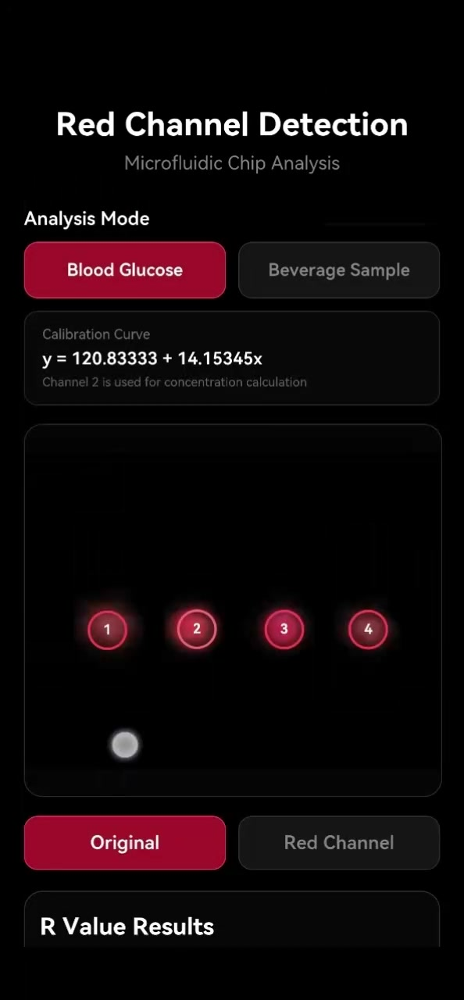

如何让光学检测从实验室仪器走向便携读出？
核心挑战不仅是获得信号，而是建立从反应、芯片加样、图像采集到定量分析的一套稳定流程，并理解真实样本和设备变化带来的误差。
硕士科研中，我参与构建“复合探针—微流控芯片—智能手机读出”的一体化便携检测体系，重点负责芯片与手机端检测流程开发、性能验证和工程风险识别。
APP DEMO
APPLICATION VIDEO
视频展示了手机端对微流控芯片图像进行读取与分析的实际流程，包括样品模式选择、标定曲线调用、红通道读取以及定量结果输出，让“便携检测”从实验链路延伸到实际交互界面。
核心挑战不仅是获得信号，而是建立从反应、芯片加样、图像采集到定量分析的一套稳定流程，并理解真实样本和设备变化带来的误差。
优化反应条件、加样和图像采集流程，完成标准曲线、误差与重复性评价，并对真实样本、设备差异与试剂稳定性进行验证和风险识别。
实现 600–700 nm 光谱信号向手机红通道定量值转化，建立 UCL/CD 双信号检测体系，并完成多类真实样本验证。
SYSTEM

手机读取微流控芯片图像，把实验信号带入数字化流程。
将图像中的红通道信号提取为可比较的数值。
结合标准曲线，把通道值转成最终可读的定量结果。
VALIDATION
优化反应条件、加样与图像采集流程。
建立标准曲线，将手机通道值转化为可分析的定量结果。
评价测试结果在重复测量中的稳定性与偏差。
完成 4 例全血样本、7 类饮料样品验证。
RISK
复杂基质可能改变信号与定量关系。
时间窗口变化会影响读数一致性。
不同手机/采集条件可能引入系统偏差。
保存与使用条件会影响长期可靠性。
项目让我从单纯追求更好的实验结果，转向关注流程、重复性、真实样本、设备差异和边界条件。这也形成了我后来做产品验证与系统测试时的核心思维。
相关科研成果已发表，另有 1 篇相关论文在投。
NEXT CASE
MedTech Product Intelligence Agent→